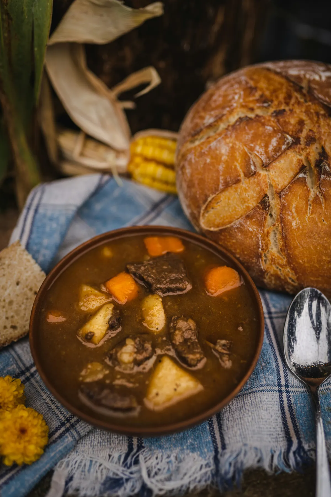
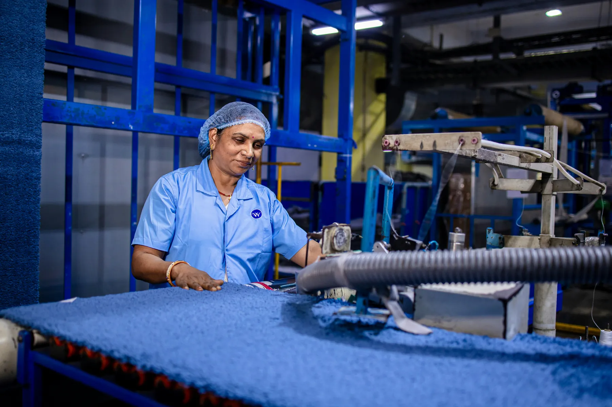
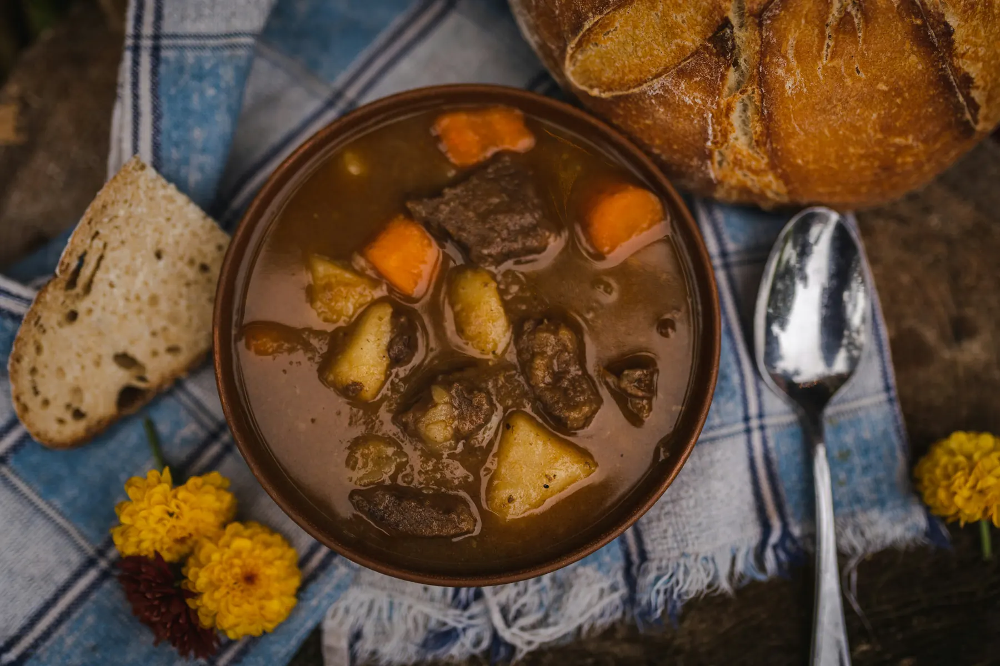

Agricultural Sourcing
Protein, root vegetables, and aromatics acquired under written standards.
The Global Standard in Beef Stew
Beef & Stew is a New York company focused on the sourcing, production, and responsible distribution of beef stew.
Corporate profileThe Company
From our headquarters in New York City, we oversee the full stew lifecycle with consistent standards and clear lines of accountability.
We believe that beef stew is too consequential to be approached casually.
“For nearly four decades, this company has served the world's most discerning institutions in matters of beef, of stew, and, on the rare occasion, of both. We do not take the responsibility lightly.”Thaddeus R. Beef
Operations
Protein, root vegetables, and aromatics acquired under written standards.
Controlled braising and broth systems designed for repeatable outcomes.
Documented custody from vessel to table.




The Product
Nothing material has been omitted.
Selected Insight
Broth thickness is often treated as a matter of preference. Our position is that preference begins only after control has been established.
enquiries@beef-stew.com